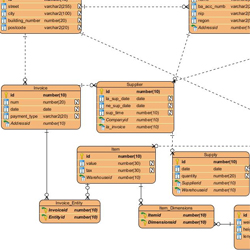
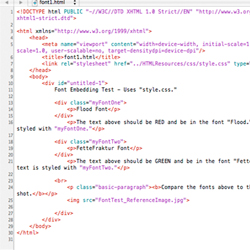
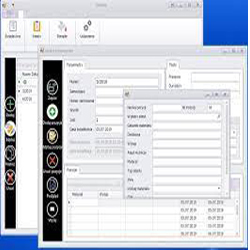
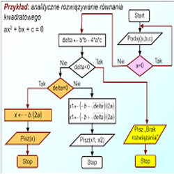

Urządzenia i systemy komputerowe
Na tym przedmiocie poznasz budowę oraz sposób działania różnego rodzaju urządzeń peryferyjnych. Dowiesz się jak interpretować parametry urządzeń, oraz identyfikować urządzenia na podstawie ich parametrów.
Bazy danych

Na tym przedmiocie nauczysz się posługiwać pojęciami dotyczącymi baz danych. Dowiesz się również jak projektować, tworzyć, obsługiwać i administrować bazami danych.
Tworzenie statycznych stron internetowych

Na tych zajęciach poznasz język programowania HTML. Dowiesz się również jak tworzyć i publikować strony i aplikacje internetowe.
Aplikacje mobilne
Na tym przedmiocie nauczysz się wykorzystywać środowisko programistyczne dla aplikacji mobilnych, projektować, programować i testować aplikacje mobilne.
Aplikacje desktopowe

Na tych zajęciach nauczysz się wykorzystywać środowisko programistyczne oraz frameworki do programowania aplikacji desktopowych, dowiesz się również jak programować zaawansowane aplikacje.
Algorytmy i techniki programowania

Na tych zajęciach zapoznasz się z najważniejszymi metodami rozwiązywania programów algorytmicznych oraz sposobem na wykorzystanie programowania do ich rozwiązania.
Aplikacje klienckie i serwerowe
Na tym przedmiocie nauczysz się o różnicach pomiędzy back-endem, a front-endem. Nauczysz się także pisać oprogramowanie serwera niezbędne do działania aplikacji internetowych oraz szybko reagujące na działania użytkownika aplikacje klienckie. Wszystko głównie dzięki językom PHP i javascript.
Aplikacje webowe
Na tym przedmiocie poznasz zasady programowania, dowiesz się jak, zaprogramować różnego rodzaju skrypty, oraz jak właściwie zaprojektować, zaprogramować, przetestować oraz w odpowiedni sposób udokumentować swoją pracę.